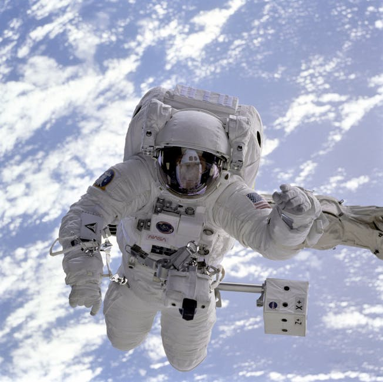

Newton contra o que parece óbvio — uma reconstrução das intuições erradas sobre força e movimento
Ilusão 1 — Movimento exige força contínua
Ilusão 2 — Força produz velocidade
Ilusão 3 — Força é unilateral
"Se não empurrar, para."
A experiência cotidiana parece confirmar: sem empurrar, tudo para.
Conclusão intuitiva: força é aquilo que mantém o movimento.
Esta visão durou ~2000 anos.
Uma bomba conceitual.
O atrito sempre esteve lá, mas durante séculos foi ignorado como causa do repouso.
Se todo atrito desaparecesse, o que aconteceria com um carrinho já em movimento?
"Um corpo mantém seu estado de repouso ou de movimento retilíneo uniforme enquanto a força resultante sobre ele for nula."
A pergunta certa não é "o que mantém o movimento?" — é "o que muda o movimento?"
No gelo, o atrito quase desaparece — e a inércia aparece.
Repouso é o único estado natural. Tudo tende a parar.
Sem atrito, um corpo em movimento parece continuar. A inércia emerge.
Repouso e MRU são igualmente naturais. A força só aparece para mudar esse estado.
"A força resultante sobre um corpo é igual ao produto de sua massa pela aceleração que nele produz."
O aluno pensa: mais força → mais rápido. Newton corrige: mais força → mais aceleração.
É possível ter velocidade alta com força resultante zero?
Fresult. = m · a
F — força resultante (N) | m — massa (kg) | a — aceleração (m/s²)
Empurre um carrinho vazio e um cheio com a mesma força. Qual acelera mais?
"Para toda força que um corpo exerce sobre outro, este exerce sobre aquele uma força de mesma intensidade, mesma direção e sentido contrário."
Toda força nasce de uma interação entre dois corpos. Nunca existe uma só.
Pé ↔ Chão
Foguete ↔ Gases
Terra ↔ Maçã
"A reação cancela a ação, então o corpo nunca se move."
Ação e reação têm mesma intensidade e sentidos opostos — mas atuam em corpos
diferentes.
Não se cancelam no mesmo corpo.
Colisão: cada bola exerce força igual e oposta sobre a outra.
"Sem força, sem movimento."
FALSO.
Movimento uniforme não exige força — exige ausência de força resultante.
"Força causa velocidade."
INCOMPLETO.
Força causa aceleração. Pode haver velocidade altíssima com força resultante zero.
"Quem é mais forte faz força; o outro só sofre."
FALSO.
Toda interação é mútua. A parede empurra você tanto quanto você a empurra.
"Não há força sem interação, não há aceleração sem força, não há mudança de estado sem causa."
— O programa completo da mecânica clássica em uma frase.

No espaço, a inércia reina: sem atrito, os satélites orbitam para sempre.